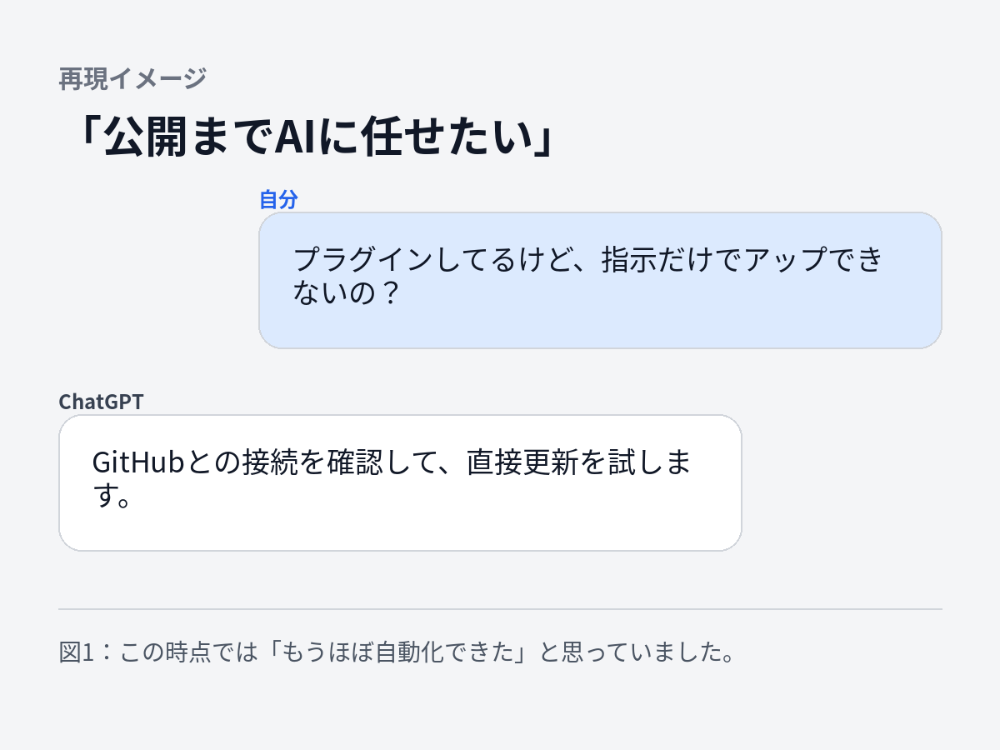
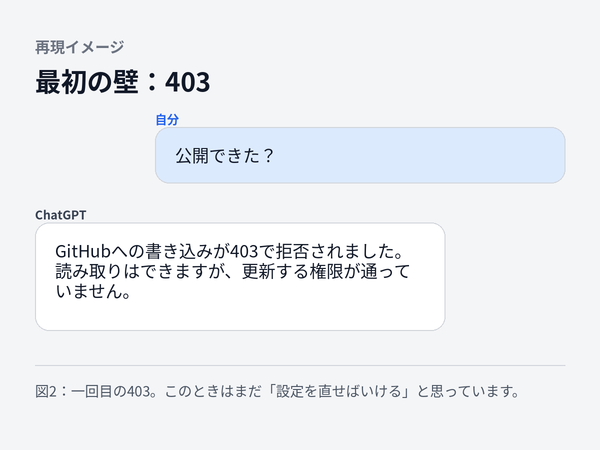
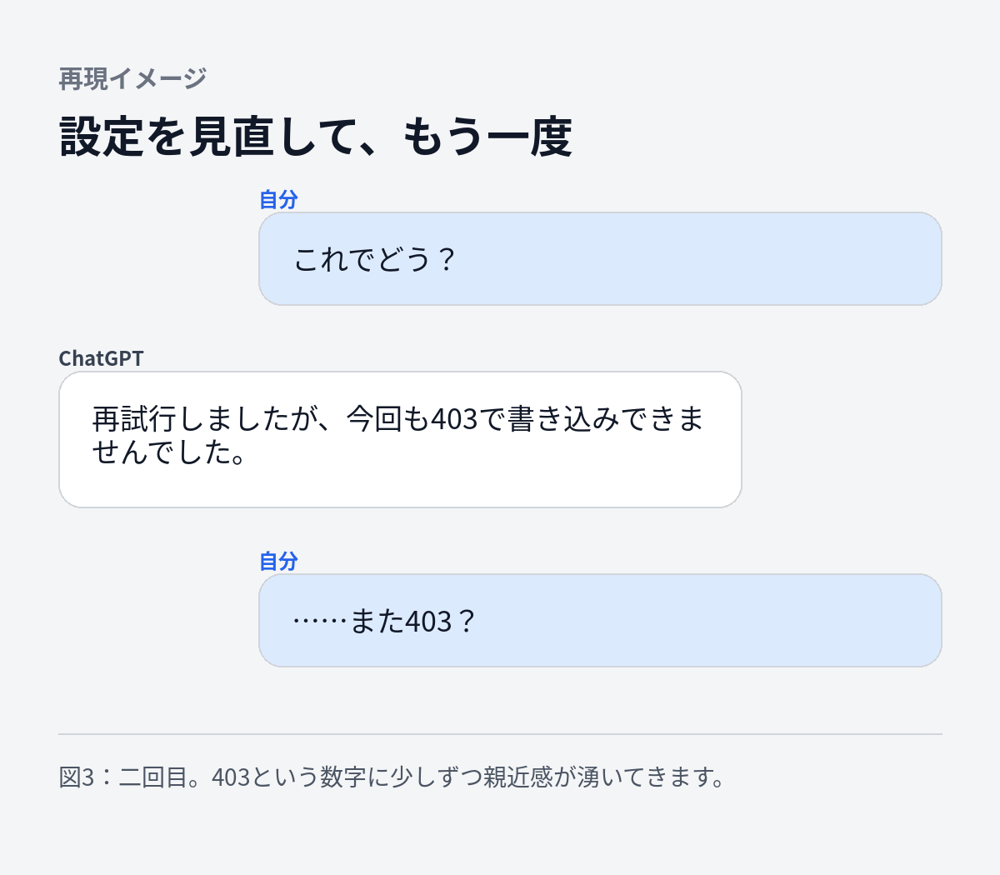
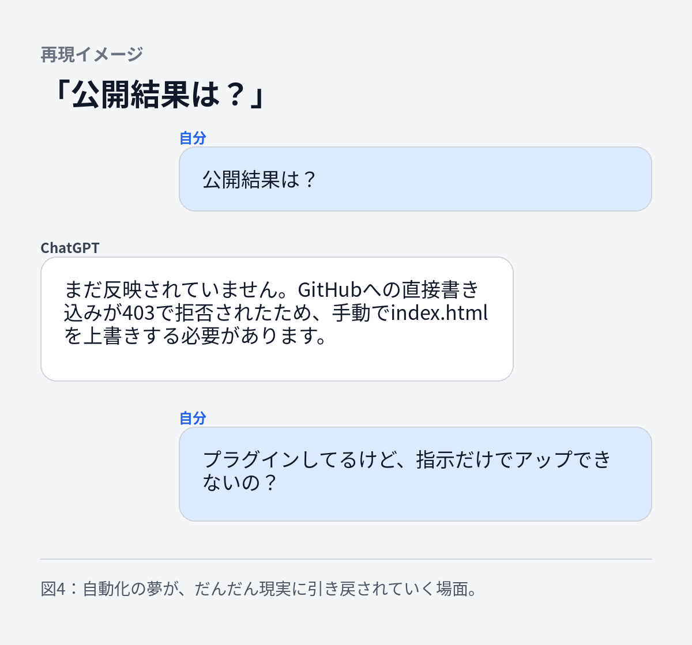
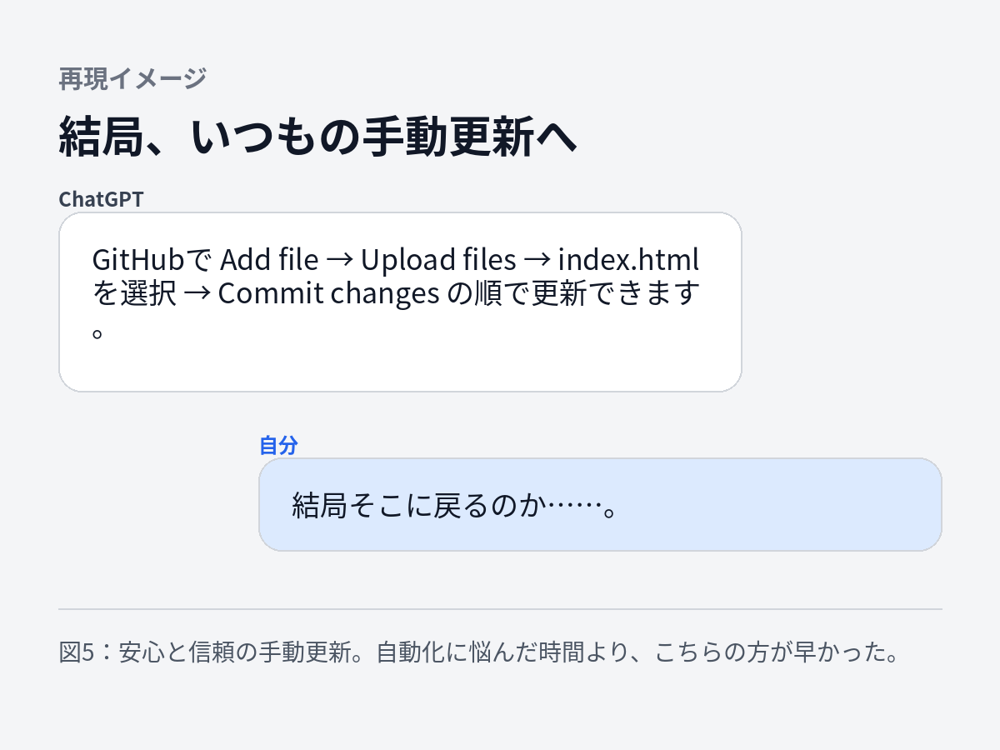

『ブログ更新もAIに任せよう』としたら、403エラーに負けた話
ブログ更新までAIに任せようとしたら、何度も403。自動化を諦めて手動に戻った、失敗もそのまま残す記録。BTS NEWS HUBも作れた。
ブログも作れた。
記事もChatGPTに書いてもらえる。
ここまで来ると、人間は欲が出ます。
「これ、ブログへのアップもChatGPTにやってもらえるんじゃない？」
そう思いました。
結論から言うと、
できませんでした。
今回は、そんな失敗の話です。
そもそも、このブログはどうやって更新しているのか
僕のような初心者だと、最初はここからよく分かりませんでした。
ブログの記事を書く。
↓
「公開」ボタンを押す。
↓
インターネットに出る。
普通はそんなイメージですよね。
でも、僕が作ったブログには、今のところそんな便利な「公開」ボタンはありません。
このブログはGitHub Pagesという仕組みを使って公開しています。
ものすごく簡単に言うと、
GitHubという場所にブログのファイルを置いておくと、それをWebサイトとして公開してくれる仕組み
です。
僕のブログの場合、中心になっているのが、
index.html
というファイル。
名前は難しそうですが、
ブログ本体が入ったファイル
くらいに思っておけば大丈夫です。
今の更新方法はこんな感じです。
ChatGPTに、
「この記事を追加して」
とお願いする。
↓
ChatGPTが新しい index.html を作る。
↓
僕がそのファイルをGitHubにアップする。
↓
GitHubで「Commit changes」を押す。
↓
少し待つ。
↓
ブログが更新される。
つまり最後の、
「GitHubにファイルを持っていって入れ替える作業」
だけは、自分でやっていました。
慣れれば大した作業ではありません。
でも、人間は欲が出ます。
また出ました。
「ここもAIがやってくれれば、僕は『記事を公開して』と言うだけでいいのでは？」
GitHubのプラグインをつなげてみた
ChatGPTには、外部のサービスとつなげられる仕組みがあります。
そこでGitHubを接続してみました。
これで、
「この記事をブログに追加して」
↓
ChatGPTがGitHubのファイルを書き換える
↓
ブログ公開
ここまで一気にやってくれる。
そんな未来を想像していました。
僕がやることは、
「公開して」
の一言だけ。
これは楽すぎる。
そこで聞いてみました。

「これはいけそうだ」
と思いました。
ところが。
403
出てきたのが、
403エラー。
初心者の僕には、数字だけ見ても何のことか分かりません。
ChatGPTに聞いてみると、
ざっくり言えば、
「見ることはできても、書き換える権限がありません」
という状態らしい。

なるほど。
では権限を直せばいい。
そう思って、またChatGPTとやり取りします。
GitHubを確認。
ChatGPTを確認。
接続を確認。
もう一度やってみる。
結果。
403。

もう403は分かりました。
AIとの会話が、だんだんコントになってくる
このあたりから、やり取りが少し面白くなってきます。
「公開結果は？」
と聞く僕。
「まだ反映されていません」
と答えるChatGPT。
「プラグインしてるけど、指示だけでアップできないの？」
と再び聞く僕。

AIを使い始めたとき、
僕の中では、
AI＝何でも一瞬でやってくれるもの
というイメージがかなりありました。
でも実際に使ってみると、そうでもありません。
コードを書いてくれても動かないことがある。
設定が必要なこともある。
権限で止まることもある。
そして、
AI自身が「できそう」と言ったことが、実際にやってみるとうまくいかないこともある。
今回がまさにそれでした。
結局、手動に戻りました
何往復かした結果、
今回は自動アップロードを諦めることにしました。
結局どうしたか。
いつもの方法です。
GitHubを開く。
↓
ブログのファイルが置いてある場所を開く。
↓
「Add file」
↓
「Upload files」
↓
新しい index.html をアップする。
↓
「Commit changes」
終了。

少し待つと、ブログにも反映されます。
……
普通にできる。
自動化するためにかなりやり取りしたあと、
手動なら数分。
何とも言えない気持ちになります。
でも、これはこれで面白い
今回、ブログへの自動アップロードは成功しませんでした。
記事としては、
「ChatGPTとGitHubをつないだら自動更新できました！」
のほうがカッコいいです。
でも、このブログでは、こういう失敗もそのまま書いていこうと思っています。
僕自身、AIを本格的に触り始める前は、
「AIを使える人は、何でも簡単に作っている」
ように見えていました。
でも実際にやってみると、
全然そんなことはありません。
分からない。
↓
AIに聞く。
↓
やってみる。
↓
動かない。
↓
また聞く。
↓
別の問題が出る。
だいたいこんな感じです。
それでも、少しずつ前には進みます。
今回も自動化には失敗しましたが、
そのおかげで、
「GitHubがブログのファイルを置く場所」
「Commitすると変更が確定する」
「GitHub PagesがそれをWebサイトとして公開してくれる」
ということが、前より少し分かるようになりました。
「できなかった」も、このブログの成果
このブログでは、
AIで作ったWebサイトやアプリを紹介していくつもりです。
でも、
成功したものだけを並べるブログにはしたくありません。
「これをやったら失敗した」
「何回やっても動かなかった」
「結局、人間がやったほうが早かった」
そんなことも含めて、
40代の会社員がAIを使って、どこまでできるのかを記録していきたいと思っています。
今回分かったこと。
AIはすごい。
でも、
何でも一発でやってくれる魔法ではない。
そして今回のブログ更新は、
AIとの何往復ものやり取りの末、
今日も僕がGitHubを開いて、
「Upload files」
を押しています。